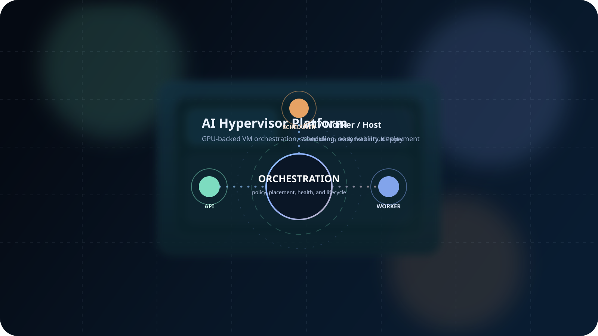
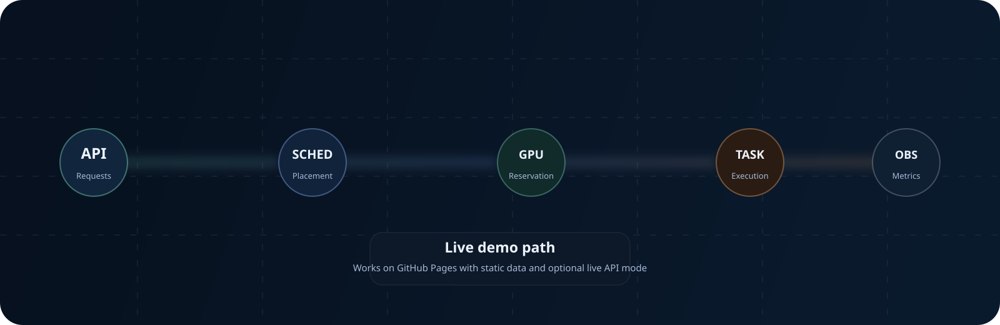

Modern GPU VM control plane
AI Hypervisor Platform
A production-oriented orchestration layer for GPU-backed virtual machines, scheduling, lifecycle management, telemetry, and repeatable deployment.

Static demo mode ships with the Pages site. Pass ?api= to connect a live backend.
Control Surface
REST and WebSocket APIs are designed for VM lifecycle operations, GPU allocation, host management, and task execution.
- API gateway and request validation
- VM manager, scheduler, and task executor
- Host agent and resource monitor pipelines
Delivery Path
GitHub Actions publishes this site to Pages and builds container images for the API server and worker using the shared Dockerfile.
- GitHub Pages deployment from
docs/site - GHCR images for ai-hypervisor-platform-api and ai-hypervisor-platform-worker
- Fetch the OpenAPI document directly from the repository
Live console
Rich mock data keeps the site useful on GitHub Pages even without a backend.
Operational metrics
static demo
Workflow cards
policy-first
Recent activity
demo feed
Motion preview
Animated SVG assets render directly in the repo README and on GitHub Pages.
{kind=link}

System View
1
API server
Accepts requests, validates state transitions, and exposes health.
2
Scheduler + GPU orchestrator
Score capacity, reserve accelerators, and allocate placement.
3
Task executor + host agent
Carry out long-running work and talk to libvirt at the edge.